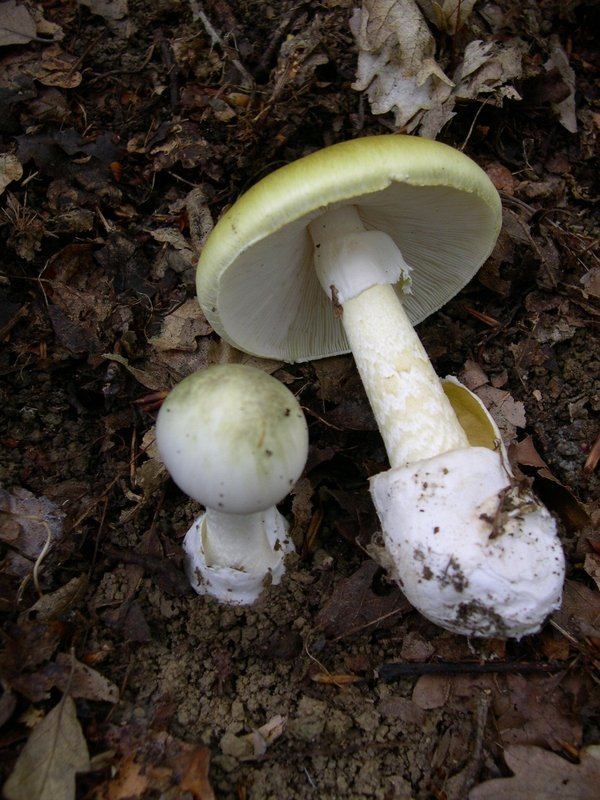
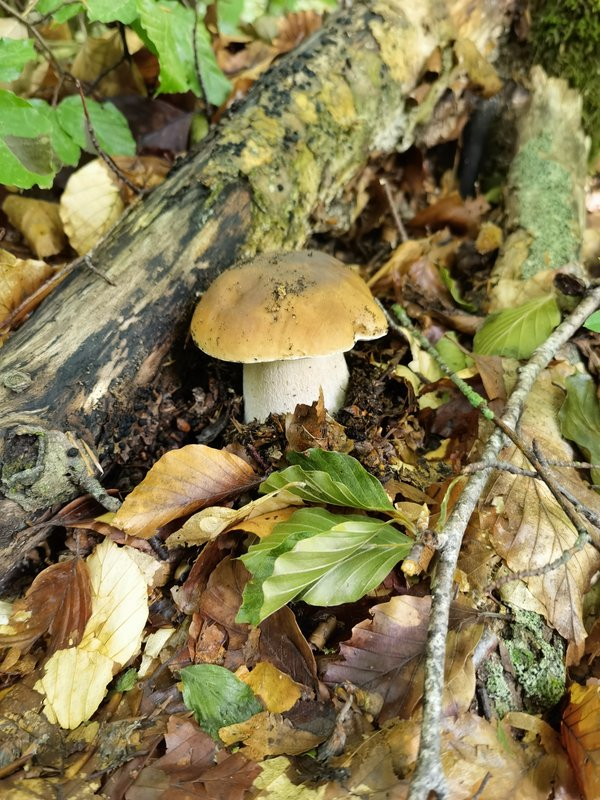

☠️ ÖlümcülKöygöçüren (*Amanita*)

✅ YenenÇayır / Kültür Mantarı
Köygöçüren ⚡ Çayır Mantarı 🍄
- Lamel Rengi: Köygöçürenin lamelleri daima bembeyazdır; Çayır mantarının lamelleri ise olgunlaştıkça pembe ve çikolata kahvesine döner.
- Kök Torbası (Volva): Köygöçürenin kök tabanında belirgin bir yumurta çanağı (volva) bulunur; çayır mantarında volva yoktur.
- Şapka Tonu: Köygöçüren hafif zeytuni-sarımtırak bir parıltıya sahiptir.